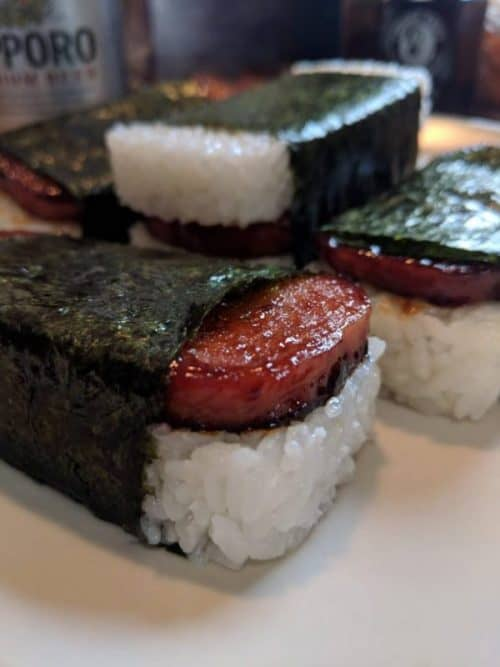

Back to previous page
How to make delicious sweet musubi!

Ever wanted to make spam taste less salty? Or actually, better?This dish originated from Hawaii from a person name Barbara Funamura, a Japanese-American women!
This dish is basically grilled spam on top of a block of rice with nori wrapped around it! It's sweet, salty, sticky, and very cheap and easy to mmake!
Ingredients
Steps!
- Slice the spam into about 8-10 pieces or depending on how thick you like it (keep the can!). I like mines a little crunchy so I cut them into thin slices.
- Grab a pan and heat it until it is hot
- Coat the pan with some oil or butter
- After the pan is hot and has oil/butter on it, start cooking the spam pieces on medium heat
- Put however much siracha/gochujang sauce on it and spread it evenly.
- Sprinkle in however much brown sugar you like (more sugar if you want more sweetness)
- After 5 minutes flip the spam to cook on the other side. The side that was cooking should look a bit brown and if it is not, keep cooking.
- Once you flip the spam, repeat steps 5 to 7
- After the spam is done, place them on a plate and set aside.
- Grab the Nori and cut them into 3-4 pieces, depending on if you like the Nori thick or not
- Grab the spam can and plastic wraps
- Put the plastic wrap in the spam can. Use a decent amount of plastic wrap. This is to form and wrap the musubi.
- Place one strip of nori at the very bottom of the can and plastic wrap
- Put a piece of spam at the bottom, on top of the nori
- Then put however much rice you want on top
- Press down, but too hard. You want the spam and rice to not fall out once you are snacking on it
- After the rice has been placed, fold the Nori on top of the rice
- Then grab the plastic wrap sides and pull everything out
- Wrap the plastic wraps around the musubi and then you are done!
The Musubi should look like:
